건설재료시험기사 (2011-10-02 기출문제)
1과목: 콘크리트공학
1. 섬유보강콘크리트를 사용하였을 때 콘크리트의 성질 중 개선되는 것이 아닌 것은?
- 균열에 대한 저항성
- 내구성 증가
- 내충격성 증가
- 유동성 증가
(정답률: 100%)

2. 콘크리트 비비기에 관한 설명 중 잘못된 것은?
- 되비비기는 응결이 시작된 이후 다시 비비는 경우로서 강도가 저하된다.
- 연속믹서를 사용할 경우 비비기 시작 후 최초에 배출되는 콘크리트는 사용해서는 안 된다.
- 비비기는 미리 정해 둔 비비기 시간 이상 계속해서는 안 된다.
- 비비기를 시작하기 전에 미리 믹서에 모르타르를 부착시켜야 한다.
(정답률: 71%)
3. 일반 콘크리트를 친 후 습윤양생을 하는 경우 습윤상태의 보호기간은 조강포틀랜드 시멘트를 사용한 때 얼마이상을 표준으로 하는가? (단, 일평균기온이 15℃이상인 경우)
- 1일
- 3일
- 5일
- 7일
(정답률: 39%)
4. 콘크리트의 비파괴 시험 중 초음파법에 의한 균열 깊이를 평가하는 방법이 아닌 것은?
- T-법
- Tc-To법
- Pull-out법
- BS법
(정답률: 91%)
5. 프리플레이스트 콘크리트에 대한 설명으로 틀린 것은?
- 프리플레이스트 콘크리트의 강도는 원칙적으로 재령 28일 또는 재령 91일의 압축강도를 기준으로 한다.
- 주입 모르타르의 유동성은 유하시간에 의해 설정하며 유하시간의 설정값은 16 ~ 20초를 표준으로 한다.
- 주입 모르타르의 팽창률의 설정값은 시험 시작 후 3시간에서의 값이 5~10%인 것을 표준으로 한다.
- 사용하는 굵은 골재의 최소 치수는 10mm이상, 굵은 골재의 최대 치수는 부재단면 최소 치수의 1/3 이하로 하여야 한다.
(정답률: 64%)
6. 매스(mass) 콘크리트에 대한 설명으로 틀린 것은?
- 매스 콘크리트로 다루어야 하는 구조물의 부재치수는 일반적인 표준으로서 넓이가 넓은 평판구조의 경우 두께 0.8m이상으로 한다.
- 매스 콘크리트로 다루어야 하는 구조물의 부재치수는 일반적인 표준으로서 하단이 구속된 벽조의 경우 두께 0.3m이상으로 한다.
- 콘크리트를 타설한 후에 침하의 발생이 우려되는 경우에는 재진동 다짐 등을 실시하여야 한다.
- 수축이음을 설치할 경우 계획된 위치에서 균열 발생을 확실히 유도하기 위해서 수축이음의 단면 감소율을 35% 이상으로 하여야 한다.
(정답률: 74%)
7. 수밀 콘크리트의 배함에 대한 설명으로 틀린 것은?
- 콘크리트의 소요의 품질이 얻어지는 범위 내에서 단위수량 및 물-결합재비는 되도록 적게 하고, 단위 굵은 골재량은 되도록 크게 한다.
- 콘크리트의 소요 슬럼프는 되도록 적게 하여 180mm를 넘지 않도록 하며, 콘크리트 타설이 용이할 때에는 120mm 이하로 한다.
- 물-결합재비는 50%이하를 표준으로 한다.
- 콘크리트의 워커빌리티를 개선시키기 위해 공기연 행제, 공기연행감수제 또는 고성능 공기연행감수제를 사용하는 경우라도 공기량은 2%이하가 되게 한다.
(정답률: 62%)
8. 공기 중의 탄산가스의 작용을 받아 콘크리트 중의 수산화칼슘이 서서히 탄산칼슘으로 되어 콘크리트가 알칼리성을 상실하는 것을 무엇이라 하는가?
- 알칼리반응
- 염해
- 손식
- 중성화
(정답률: 96%)
9. 거푸집 및 동바리의 구조를 계산할 때 연직하중에 대한 설명으로 틀린 것은?
- 고정하중으로서 콘크리트의 단위중량은 철근의 중 량을 포함하여 보통 콘크리트인 경우 20kN/m3을 적용하여야 한다.
- 고정중으로서 거푸집 하중은 최소 0.4kN/m3이상을 적용하여야 한다.
- 특수 거푸집이 사용된 경우에는 고정하중으로 그 실제의 중량을 적용하여 설계하여야 한다.
- 활하중은 구조물의 수평투영면적(연직방향으로 투영시킨 수평면적)당 최소 2.5kN/m2이상으로 하여야 한다.
(정답률: 79%)
10. 콘크리트의 배합강도를 결정하기 위해서는 30회 이상의 시험실적으로부터 구한 콘크리트 압축강도의 표준편차가 필요하다. 시험횟수가 29회 이하인 경우는 압축강도의 표준편차에 보정계수를 곱하여 그 값을 구하는데 시험횟수가 23회 인 경우의 보정계수 값은?
- 1.10
- 1.07
- 1.⑤
- 1.03
(정답률: 78%)
11. 수중 콘크리트의 배합강도에 대한 설명으로 옳은 것은?
- 일반 수중 콘크리트는 수중에서 시공할 때의 강도가 표준공시체 강도의 0.6~0.8배가 되도록 배합강도를 설정하여야 한다.
- 수중불분리성 콘크리트는 규정에 따라 제작한 수중 제작공시체의 재령 14일의 압축강도를 배합강도로서 설정하여야 한다.
- 현장 타설 콘크리트말뚝 및 지하연속벽 콘크리트는 수중에서 시공할 때 강도가 대기 중에서 시공할 때 강도의 1.5배로 하여 배합강도를 설정하여야 한다.
- 현장 타설 콘크리트말뚝 및 지하연속벽 콘크리트는 안정액 중에서 시공할 때 강도가 대기 중에서 시공할때 강도의 1.2배로 하여 배합강도를 설정하여야 한다.
(정답률: 75%)
12. 콘크리트의 설계기준 압축강도가 40MPa이고, 30회 이상의 시험실적으로부터 구한 압축강도의 표준편차가 5MPa이라면 배합강도는?
- 45.2MPa
- 46.7MPa
- 47.7MPa
- 48.2MPa
(정답률: 58%)
13. 프리스트레스트 콘크리트그라우트에 대한 설명으로 틀린 것은?
- 유동성은 유하시간에 의해 설정하며, 유하시간의 범위는 미리 실험에 의해 정하여야 한다.
- 비팽창성 그라우트에서 팽창률은 -0.5~0.5%를 표준으로 한다.
- 블리딩률은 5%이하를 표준으로 한다.
- 물-결합재비는 45%이하로 한다.
(정답률: 65%)
14. 다음 관리도의 종류에서 정규분포이론이 적용되지 않는 것은?
- P 관리도(불량률 관리도)
- x 관리도(측정값 자체의 관리도)
 -R 관리도(평균값과 범위의 관리도)
-R 관리도(평균값과 범위의 관리도) -σ 관리도(평균값과 표준편차의 관리도)
-σ 관리도(평균값과 표준편차의 관리도)
(정답률: 96%)
15. 프리텐션 방식의 프리스트레스트 콘크리트에서 프리스트레싱 할 때의 콘크리트 압축강도는 얼마이상을 기준으로 하는가? (단, 실험이나 기존의 적용 실적 등을 통해 안정성이 증명된 경우는 제외한다.)
- 30MPa
- 35MPa
- 40MPa
- 45MPa
(정답률: 91%)
16. φ100×200mm인 원주형 공시체를 사용한 할열(쪼갬)인장시험에서 파괴하중이 100kN이면 콘크리트의 할 열(쪼갬)인장강도는?
- 1.6MPa
- 2.5MPa
- 3.2MPa
- 5.0MPa
(정답률: 74%)
17. 고압증기양생을 실시한 콘크리트의 특징에 대한 설명으로 틀린 것은?
- 고압증기양생을 실시한 콘크리트는 용해성의 유리 석회가 없기 때문에 백태현상을 감소시킨다.
- 외관은 보통양생한 포틀랜드시멘트 콘크리트 색의 특징과 다르며, 주로 흰색을 띤다.
- 보통양생한 콘크리트에 비해 철근의 부착강도가 증가된다.
- 고압증기양생한 콘크리트는 어느 정도의 취성을 가진다.
(정답률: 89%)
18. 외기온도가 25℃를 초과하고 지연제의 사용 등 특별한 조치를 하지 않은 일반콘크리트에서 비비기에서 치기가 끝날 때까지 허용되는 최대시간은?
- 1.5시간
- 2시간
- 2.5시간
- 3시간
(정답률: 89%)
19. 시방배합을 통해 단위수량 174kg/m3, 시멘트량 369kg/m3, 잔골재 702kg/m3, 굵은골재 1,049kg/m3을 산출하였다. 현장골재의 입도를 고려하여 현장배합으로 수정한다면 잔골재와 굵은골재의 양은 각각 얼마가 되겠는가? (단, 현장골재의 입도는 잔골재 중 5mm체에 남는 양이 10%이고, 굵은골재 중 5mm 체를 통과한 양이 5%이다.)
- 잔골재 : 536kg/m3, 굵은골재 : 1188kg/m3
- 잔골재 : 637kg/m3, 굵은골재 : 1114kg/m3
- 잔골재 : 723kg/m3, 굵은골재 : 1028kg/m3
- 잔골재 : 802kg/m3, 굵은골재 : 949kg/m3
(정답률: 75%)
20. 콘크리트의 압축강도에 영향을 미치는 요인에 대한 설명 중 틀린 것은?
- 물-시멘트비가 동일한 경우 부순돌을 사용한 콘크리트의 압축강도는 강자갈을 사용한 콘크리트보다 강도가 증가 된다.
- 물-시멘트비가 클수록 압축강도는 저하된다.
- 콘크리트 성형시 압력을 가하여 경화시키면 압축강도는 저하된다.
- 습윤양생이 공기 중 양생보다 압축강도가 증가된다.
(정답률: 65%)
2과목: 건설시공 및 관리
21. 도로공사에서 성토해야 할 토량이 36000m3인데 흐트러진 토량이 30000m3가 있다. 이 때 L=1.25, C=0.9라면 자연상태 토량의 부족 토량은?
- 8000m3
- 12000m3
- 16000m3
- 20000m3
(정답률: 60%)
22. 불도저로 압토와 리핑 작업을 동시에 실시한다. 각 작업시의 작업량이 아래의 표와 같을 때 시간당 작업량은?
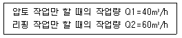
- 24m3/h
- 30m3/h
- 34m3/h
- 50m3/h
(정답률: 69%)
23. 연약지반위에 흙쌓기 공사를 할 경우 성토의 활동 파괴 및 융기현상을 억제하기 위한 처리공업은?
- 강제치환 공법
- 지반 폭파공법
- 언더필 공법
- 압성토 공법
(정답률: 60%)
24. T.B.M 공법에 대한 설명으로 옳은 것은?
- 무진동 화약을 사용하는 방법이다.
- cutter에 의하여 암석을 압쇄 또는 굴착하여 나가는 굴착공법이다.
- 암층의 변화에 대하여 적응하기가 쉽다.
- 여굴이 많아질 우려가 있다.
(정답률: 60%)
25. 3점 견적법에 따른 적정공사일수는? (단, 낙관일수=5일, 정상일수=7일, 비관일수=15일)
- 6일
- 7일
- 8일
- 9일
(정답률: 75%)
26. 사장교를 케이블 형상에 따라 분류할 때 여기에 속하지 않는 것은?
- 방사(radiating)형
- 타이드(tied)형
- 하프(harp)형
- 팬(fan)형
(정답률: 74%)
27. 말뚝기초의 항타 시공에 대한 설명으로 틀린 것은?
- 두부 파손 방지를 위한 쿠션재 등의 보호조치를 하여야 한다.
- 타격 도중 말뚝의 경사, 흔들림, 편타 등에 충분히 주의해야 한다.
- 항타시 인접 말뚝 솟아오름 현상 발생시에는 재항 타하여 원지점 이하까지 항타한다.
- 말뚝 1본을 타격할 때 연속적 타격은 피하여야 하며, 항타 시간 간격을 충분히 유지하여 시간경과에 따른 관입성 저하를 방지하여야 한다.
(정답률: 81%)
28. 커튼그라우팅(curtain grouting)의 시공목적과 거리가 가장 먼 것은?
- 터널이나 댐에서 침투수를 막기 위해서
- 시공 중 침수에 의한 공사의 지연을 막기 위해서
- 콘크리트 내부의 균열 및 수축검사를 위해서
- 구조물에 작용하는 양압력을 줄이기 위해서
(정답률: 75%)
29. 네트워크 공정표의 장점에 대한 설명으로 틀린 것은?
- 중점관리가 용이하다.
- 전체와 부분의 관련을 이해하기 쉽다.
- 기자재, 노무 등 배치인원 계획이 합리적으로 이루어진다.
- 작성 및 수정이 쉽다.
(정답률: 84%)
30. 피어(pier)기초의 특성에 대한 설명으로 틀린 것은?
- 항타로 인해 자연지반이 다져지기 때문에 지반 자체의 강도가 높아지며, 지반이 연약한 경우에도 기초 선단의 지반을 이완시킬 우려가 없다.
- 일반적인 말뚝기초와 비교하여 직경이 큰 구조물이므로 지지력도 크고, 횡력에 의한 휨모멘트에 저항할 수 있다.
- 시공 시에 소음이 생기지 않아서 도시의 공사에 적합하다.
- 시공 시에 인접구조물에 피해를 주는 지표의 히빙과 지반진동이 일어나지 않는다.
(정답률: 42%)
31. 아스팔트 포장에서 표층에 대한 설명으로 틀린 것은?
- 노상 바로 위의 인공층이다.
- 교통에 의한 마모와 박리에 저항하는 층이다.
- 표면수가 내부로 침입하는 것을 막는다.
- 기층에 비해 골재의 치수가 작은 편이다.
(정답률: 88%)
32. 8ton의 덤프트럭에 1.2m3의 버킷을 갖는 백호로 흙을 적재하고자 한다. 흙의 단위 중량이 1.7t/m3이고 토량변화율(L)은 1.3이고 버킷계수가 0.9일 때 트럭 1대당 백호 적재회수는?
- 5회
- 6회
- 7회
- 8회
(정답률: 48%)
33. 지하철공사의 공법에 관한 다음 설명 중 틀린 것은?
- open cut 공법은 얕은 곳에서는 경제적이나 노면 복공을 하는데 지상에서의 지장이 크다.
- 개방형 쉴드로 지하수위 아래를 굴찰 할 때는 압기할 때가 많다.
- 연속 지중벽 공법은 연약지반에서 적합하고 지수성도 양호하나, 소음 대책이 어렵다.
- 연속 지중벽 공법의 대표적인 것은 이코스 공법, 엘제 공법, 쏠레턴슈 공법 등이 있다.
(정답률: 56%)
34. 본바닥 토량 20000m3를 0.6m3 백호를 사용하여 굴착하고자 한다. 아래 표의 조건과 같을 때 굴착완료에 며칠이 소요되는가?
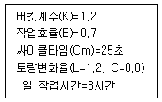
- 35일
- 38일
- 42일
- 46일
(정답률: 65%)
35. 그래브 준설선에 대한 설명으로 틀린 것은?
- 단단한 지반의 준설에는 부적당하다.
- 규모가 큰 준설작업에 적합하다.
- 준설깊이를 조절할 수 있다.
- 기계가 비교적 간단하다.
(정답률: 39%)
36. 아래의 표에서 설명하는 심빼기 발파공은?
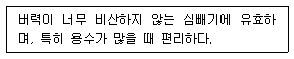
- 벤치 컷
- 피라미드 컷
- 노 컷
- 스윙 컷
(정답률: 58%)
37. 함수비 조절과 재료혼합을 위하여 사용되는 기계는?
- 스크레이퍼(Scraper)
- 스태빌라이져(Stabilizer)
- 콤펙터(Compactor)
- 불도저(Buldozer)
(정답률: 75%)
38. 어떤 공사에서 하한규격값 SL=120kg/cm2이고, 측정결과 표준편차의 추정값 σ=15kg/cm2, 평균값
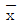
=180kg/cm2일 때 이 규격값에 대한 여유값은?- 7.5kg/cm2
- 15kg/cm2
- 30kg/cm2
- 45kg/cm2
(정답률: 39%)
39. 아스팔트 포장에서 프라임 코트(prime coat)의 중요목적이 아닌 것은?
- 보조기층과 그 위에 시공될 아스팔트 혼합물과의 융합을 좋게 한다.
- 보조기층에서 모세관 작용에 의한 물의 상승을 차단한다.
- 기층 마무리 후 아스팔트 포설까지의 기층과 보조기층의 파손 및 표면수의 침투, 강우에 의한 세굴을 방지한다.
- 배수층 역할을 하여 노상토의 지지력을 증대시킨다.
(정답률: 64%)
40. 콘크리트 중력댐에 대한 설명으로 옳은 것은?
- 자중이 크므로 견고한 지반이 필요하다.
- 댐의 상단에서 직접 홍수량을 방류하는 형식을 비월류식이라 한다.
- 일종의 필댐이다.
- 댐의 총 자중은 총 수평력 보다 작아야 한다.
(정답률: 77%)
3과목: 건설재료 및 시험
41. 상온에서 액체이며 동해를 입기에 가장 쉬운 폭약은?
- 다이너마이트
- 칼릿
- 니트로글리세린
- 질산암모늄계 폭약
(정답률: 79%)
42. 합판에 대한 설명으로 틀린 것은?
- 로터리 베니어는 증기에 가열 연화되어진 둥근 원목을 나이테에 따라 연속적으로 감아 둔 종이를 펴는 것과 같이 엷게 벗겨낸 것이다.
- 슬라이스트 베니어는 끌로서 각목을 얇게 절단한 것으로 아름다운 결을 장식용으로 이용하기에 좋은 특징이 있다.
- 합판의 종류에는 섬유판, 조각판, 적층판 및 강화적층재 등이 있다.
- 합판의 특징은 동일한 원재로부터 많은 정목판과 나무결 무늬판이 제조되며, 팽창·수축 등에 의한 결점이 없고 방향에 따른 강도 차이가 없다.
(정답률: 65%)
43. 암석은 그 성인(成因)에 따라 대별되는 편마암, 대리석 등은 어느 암으로 분류 되는가?
- 수성암
- 화성암
- 변성암
- 석회질암
(정답률: 74%)
44. 부순 굵은 골재의 품질에 대한 설명으로 틀린 것은?
- 안정성 시험은 황산마그네슘으로 3회 시험하여 평가하는데, 그 손실질량은 15% 이하를 표준으로 한다.
- 흡수율은 3% 이하이어야 한다.
- 입자 모양 판정 실적률 시험을 실시하여 그 값이 55% 이상이어야 한다.
- 0.08mm체 통과량은 1.0% 이하이어야 한다.
(정답률: 60%)
45. 다음 중 급결제를 사용해야 하는 경우는?
- 레디믹스트 콘크리트의 운반거리가 멀 경우
- 서중 콘크리트를 시공할 경우
- 연속 타설에 의한 콜트 조인트를 방지하기 위해
- 숏크리트 타설시
(정답률: 80%)
46. 다음 중 재료에 작용하는 반복하중과 관계있는 성질은?
- 크리프(creep)
- 건조수축(dry shrinkage)
- 응력완화(relaxation)
- 피로(fatigue)
(정답률: 93%)
47. 목재의 건조방법은 크게 자연건조법과 인공건조법으로 나눌 수 있다. 다음 중 목재의 건조방법이 나머지 셋과 다른 것은?
- 수침법
- 자비법
- 증기법
- 훈연법
(정답률: 74%)
48. 석재로서의 화강암에 대한 설명으로 틀린 것은?
- 조직이 균일하고 내구성 및 강도가 크다.
- 내화성이 강해 고열을 받는 내화구조용으로 적합하다.
- 균열이 적기 때문에 큰 재료를 채취할 수 있다.
- 외관이 비교적 아름답기 때문에 장식재로 사용할수 있다.
(정답률: 70%)
49. 재료의 성질과 관련된 용어의 설명으로 틀린 것은?
- 강성(rigidity) : 큰 외력에 의해서도 파괴되지 않는 재료를 강성이 큰 재료라고 하며, 강도와 관계가 있으나, 탄성계수와는 관계가 없다.
- 연성(ductility) : 재료에 인장력을 주어 가늘고 길게 늘어나게 할 수 있는 재료를 연성이 풍부하다고 한다.
- 취성(brittleness) : 재료가 작은 변형에도 파괴가 되는 성질을 취성이라고 한다.
- 인성(tughness) : 재료가 하중을 받아 파괴될 때까지의 에너지 흡수 능력으로 나타낸다.
(정답률: 64%)
50. 르샤틀리에 비중병의 0.5cc눈금까지 광유를 주입하고 시료로 시멘트 64g을 가하여 눈금이 21cc로 증가되었을 때 이 시멘트의 비중은?
- 3.04
- 3.08
- 3.12
- 3.16
(정답률: 72%)
51. 전체 500g의 잔골재를 체분석한 결과가 아래 표와 같을 때 조립률은?
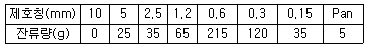
- 2.67
- 2.87
- 3.01
- 3.22
(정답률: 57%)
52. 아스팔트 배합설계시 가장 중요하게 검토하는 안정도(stability)에 대한 정의로 옳은 것은?
- 교통하중에 의한 아스팔트 혼합물의 변형에 대한 저항성을 말한다.
- 노화작용에 대한 저항성 및 기상작용에 대한 저항성을 말한다.
- 아스팔트 혼합물의 배합시 잘 섞일 수 있는 능력을 말한다.
- 자동차의 제동(Brake)시 적절한 마찰로서 정지할 수 있는 표면조직의 능력이다.
(정답률: 67%)
53. 풍화한 시멘트의 성질에 대한 설명으로 틀린 것은?
- 비중이 떨어진다.
- 강도의 발현이 저하된다.
- 응결이 지연된다.
- 강열감량이 저하된다.
(정답률: 75%)
54. 콘크리트용 인공경량골재에 대한 설명 중 틀린 것은?
- 흡수율이 큰 인공경량골재를 사용할 경우 프리웨팅(pre-wetting)하여 사용하는 것이 좋다.
- 인공경량골재를 사용한 콘크리트의 탄성계수는 보통골재를 사용한 콘크리트 탄성계수보다 크다.
- 인공경량골재의 부립률이 클수록 콘크리트의 압축강도는 저하된다.
- 인공경량골재를 사용하는 콘크리트는 AE콘크리트로 하는 것을 원칙으로 한다.
(정답률: 62%)
55. 플라이 애시에 대한 설명으로 틀린 것은?
- 표면이 매끄러운 구형입자로 되어 있어 콘크리트의 위커빌리티를 좋게 한다.
- 플라이 애시에 포함되어 있는 함유탄소분의 일부가 AE제를 흡착하는 성질이 있어 소요의 공기량을 얻기 위한 AE제의 사용량을 줄일 수 있다.
- 양질의 플라이 애시를 적절히 사용함으로써 건조, 습윤에 따른 체적 변화와 동결융해에 대한 저항성을 향상시켜 준다.
- 플라이 애시를 사용한 콘크리트는 초기재령에서의 강도는 다소 작으나 장기재령의 강도는 증가한다.
(정답률: 52%)
56. 어떤 시멘트의 주요 성분이 아래의 표와 같을 때 이 시멘트의 수경율은?
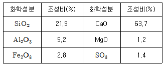
- 2.0
- 2.⑤
- 2.10
- 2.15
(정답률: 62%)
57. 조암광물에 대한 설명 중 틀린 것은?
- 석영은 무색, 투명하며 산 및 풍화에 대한 저항력이 크다.
- 사장석은 Al, Ca, Na, K 등의 규산화합물이며 풍화에 대한 저항력이 크다.
- 백운석은 산에 녹기 쉬운 광물이다.
- 석고는 경도가 1.5 ~ 2.0 정도이고 입상, 편상, 섬유모양으로 결합되어 있다.
(정답률: 67%)
58. 대폭파와 수중폭파 등 동시 폭파할 경우 뇌관 대신에 사용하는 기폭용품은?
- 도화선
- 첨장제
- 테도릴
- 도폭선
(정답률: 85%)
59. 아스팔트의 침입도 시험에서 표준침의 관입량이 8.1mm이었다. 이 아스팔트의 침입도는 얼마인가?
- 0.081
- 0.81
- 8.1
- 81
(정답률: 67%)
60. 강(鋼)의 경도시험 방법 중 선단에 다이아몬드를 끼운 추를 일정한 높이에서 낙하시켜 그 반발고를 이용하여 경도를 측정하는 방법은?
- 브리넬(Brinell)식
- 비커스(Vicker's)식
- 쇼어(Shore)식
- 로커웰(Rockwell)식
(정답률: 43%)
4과목: 토질 및 기초
61. 그림에서 정사각형 독립기초 2.5m×2.5m 가 실트질 모래 위에 시공되었다. 이 때 근입깊이가 1.50m인 경우 허용지지력은? (단, Nc=35, Nr=Nq=20)
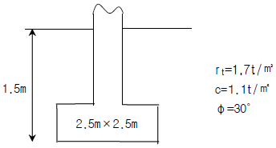
- 25.0 t/m2
- 30.0 t/m2
- 35.0 t/m2
- 45.0 t/m2
(정답률: 38%)
62. 유선망의 특징을 설명한 것으로 옳지 않은 것은?
- 각 유로의 침투량은 같다.
- 유선은 등수두선과 직교한다.
- 유선망으로 이루어지는 사각형은 정사각형이다.
- 침투속도 및 동수구배는 유선망의 폭에 비례한다.
(정답률: 72%)
63. 간극비가 e1=0.80인 어떤 모래의 투수계수가 k1=8.5×10-2cm/sec일 때 이 모래를 다져서 간극비를 e2=0.57로 하면 투수계수 k2는?
- 8.5×10-3cm/sec
- 3.5×10-2cm/sec
- 8.1×10-2cm/sec
- 4.1×10-1cm/sec
(정답률: 36%)
64. 단동식 증기 해머로 말뚝을 박았다. 해머의 무게 2.5t, 낙하고 3m, 타격당 말뚝의 평균 관입량 1cm, 안전율 6일 때 Enginnering-News 공식으로 허용지지력을 구하면?
- 250t
- 200t
- 100t
- 50t
(정답률: 39%)
65. 토압계수 K=0.5일 때 응력경로는 그림에서 어느것인가?
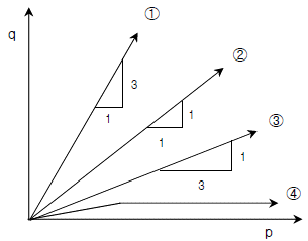
- ①
- ②
- ③
- ④
(정답률: 58%)
66. 어느 포화된 점토의 자연함수비는 45%이었고, 비중은 2.70 이었다. 이 점토의 간극비 e는 얼마인가?
- 1.22
- 1.32
- 1.42
- 1.52
(정답률: 47%)
67. 흙의 다짐에 관한 사항 중 옳지 않은 것은?
- 최적 함수비로 다질 때 최대 건조 단위중량이 된다.
- 조립토는 세립토보다 최대 건조 단위중량이 커진다.
- 점토를 최적함수비보다 작은 건조측 다짐을 하면 흙구조가 면모구조로, 습윤측 다짐을 하면 이산구조가 된다.
- 강도증진을 목적으로 하는 도로 토공의 경우 습윤측 다짐을, 차수를 목적으로 하는 심벽재의 경우 건조측 다짐이 바람직하다.
(정답률: 39%)
68. 도로 연장 3km 건설 구간에서 7개 지점의 시료를 채취하여 다음과 같은 CBR을 구하였다. 이 때의 설계 CBR은 얼마인가?
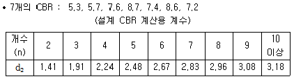
- 4
- 5
- 6
- 7
(정답률: 50%)
69. 어떤 흙에 대해서 직접 전단시험을 한 결과 수직 응력이 10kg/cm2일 때 전단저항이 5kg/cm2이었고, 또 수직응력이 20kg/cm2일 때에는 전단저항이 8kg/cm2이었다. 이 흙의 점착력은?
- 2kg/cm2
- 3kg/cm2
- 8kg/cm2
- 10kg/cm2
(정답률: 42%)
70. φ=33°인 사질토에 25°경사의 사면을 조성하려고 한다. 이 비탈면의 지표까지 포화되었을 때 안전율을 계산하면? (단, 사면 흙의 rsat=1.8t/m3)
- 0.62
- 0.70
- 1.12
- 1.41
(정답률: 30%)
71. 다음 그림과 같이 2m×3m 크기의 기초에 10t/m2의 등분포하중이 작용할 때, A점 아래 4m 깊이에서의 연직응력 증가량은? (단, 아래 표의 영향계수 값을 활용하여 구하며,
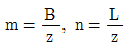
이고, B는 직사각형 단면의 폭, L은 직사각형 단면의 길이, z는 토층의 깊이 이다.)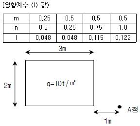
- 0.67t/m2
- 0.74t/m2
- 1.22t/m2
- 1.70t/m2
(정답률: 22%)
72. 그림과 같은 지반에서 재하순간 수주(水柱)가 지표면(지하수위)으로부터 5m 이었다. 40% 압밀이 일어난 후 A점에서의 전체 간극수압은 얼마인가?
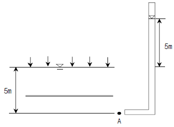
- 6t/m2
- 7t/m2
- 8t/m2
- 9t/m2
(정답률: 36%)
73. 그림과 같은 지반에 대해 수직방향 등가투수계수를 구하면?
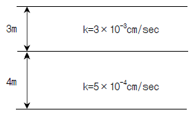
- 3.89×10-4cm/sec
- 7.78×10-4cm/sec
- 1.57×10-3cm/sec
- 3.14×10-3cm/sec
(정답률: 58%)
74. 흙의 다짐에 있어 램머의 중략이 2.5kg, 낙하고 30cm, 3층으로 각층 다짐회수가 25회 일 때 다짐에너지는? (단, 몰드의 체적은 1000cm3이다.)
- 5.63kgㆍcm/cm3
- 5.96kgㆍcm/cm3
- 10.45kgㆍcm/cm3
- 0.66kgㆍcm/cm3
(정답률: 50%)
75. 연약점토지반에 성토제방을 시공하고자 한다. 성토로 인한 재하속도가 과잉간극수압이 소산되는 속도보다 빠를 경우, 지반의 강도정수를 구하는 가장 적합한 시험방법은?
- 압밀 배수시험
- 압밀 비배수시험
- 비암빌 비배수시험
- 직접전단시험
(정답률: 67%)
76. 점토 지반의 강성 기초의 접지압 분포에 대한 설명으로 옳은 것은?
- 기초 모서리 부분에서 최대응력이 발생한다.
- 기초 중앙 부분에서 최대응력이 발생한다.
- 기초 밑면의 응력은 어느 부분이나 동일하다.
- 기초 밑면에서의 응력은 토질에 관계없이 일정하다.
(정답률: 59%)
77. 흙속에서의 물의 흐름에 대한 설명으로 틀린 것은?
- 흙의 간극은 서로 연결되어 있어 간극을 통해 물이 흐를 수 있다.
- 특히 사질토의 경우에는 실험실에서 현장 흙의 상태를 재현하기 곤란하기 때문에 현장에서 투수시험을 실시하여 투수계수를 결정하는 것이 좋다.
- 점토가 이산구조로 퇴적되었다면 면모구조인 경우보다 더 큰 투수계수를 갖는 것이 보통이다.
- 흙이 포화되지 않았다면 포화된 경우보다 투수계수는 낮게 측정된다.
(정답률: 70%)
78. 현장다짐을 실시한 후 들밀도시험을 수행하였다. 파낸 흙의 체적과 무게가 각각 365.0cm3, 745g이었으며, 함수비는 12.5%였다. 흙의 비중이 2.65 이며, 실내표준다짐시 최대 건조단위 중량이 rdmax =1.90t/m3일때 상대다짐도는?
- 88.7%
- 93.1%
- 95.3%
- 97.8%
(정답률: 50%)
79. 다음 시험종류와 시험으로부터 얻을 수 있는 값을 연결한 것이다. 틀린 것은?
- 비중계분석시험 - 흙의 비중(Gs)
- 삼축압축시험 - 강도정수(c, φ)
- 일축압축시험 - 흙의 예민비(St)
- 평판재하시험 - 지반반력계수(ks)
(정답률: 37%)
80. 널말뚝을 모래지반에 5m 깊이로 박았을 때 상류와 하류의 수도차가 4m이었다. 이 때 모래지반의 포화 단위중량이 2.0t/m3이다. 현재 이 지반의 분사현상에 대한 안전율은?
- 0.85
- 1.25
- 2.0
- 2.5
(정답률: 58%)